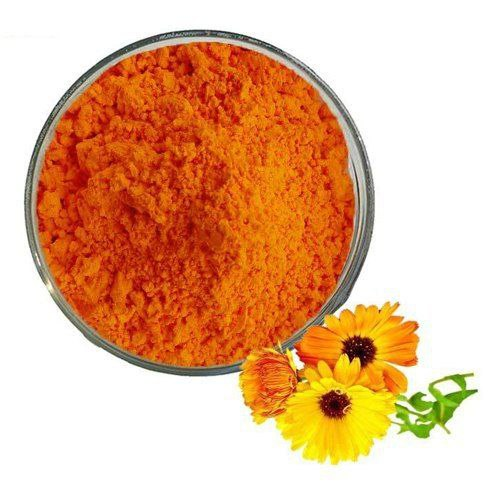

عندما تتدهور الرؤية تدريجيًا ، قد يكون من الصعب ملاحظة ذلك. يمتلك دماغنا الماكرة الوقت للتكيف مع التغييرات ، ولا يعاني الشخص من أي إزعاج معين ، وبالتالي لا يقلق. ومع ذلك ، هناك عدد من الأعراض التي يجب الانتباه إليها.
حصلت المراسلة داريا الروسية على مقابلة مع الطبيب دينيس و تحدثا عن أمراض العيون و مشاكلها و كليفية القضاء على هذه المشاكل
يمكن أن تتراجع الأعراض بشكل دوري وتضعف ثم تعود. في بعض الأحيان تقع هذه الأعراض في عين واحدة فقط. ثم تظهر الأعراض على الجانب المصاب.
يعتمد التخلص من مشاكل العيون على نهج متكامل. من الضروري تنفيذ عدد من الإجراءات الوقائية ، ولا تنس التخلص من المشكلة في الوقت المناسب.
المراسلة داريا : دكتور دينيس أخبرنا هي أعراض إجهاد العين ؟
- تضييق مجال الرؤية
- تعكر الصورة
- الشرر ، ومضات ، وتذبذب العين
- مضاعفة ملامح الأشياء
- ضعف الرؤية في الليل
- احمرار العين
- ألم في العين
- صداع الراس
من أجل التخلص من إجهاد العيون ، من الضروري التعامل مع المشكلة بعناية وجدية. يشمل الحل التخلص من الألم والقضاء على سبب المشكلة وتقوية الشبكية.
في هذا المقال سوف تجد كل ما يخص هذه الأسئلة .
المراسلة داريا : و ما هي الأعراض التي يجب أن تنتبه إليها أولاً ؟
- في المرحلة الأولية تكون أعراض ضعف البصر خفيفة. معظم الأشخاص لا ينتبهون للأعراض ، والأعراض نفسها تأتي تذهب من حيت لأخر .
أهم الأعراض بالطبع التدهور المفاجئ للرؤية نفسها. فجأة يصبح من الصعب على الشخص التركيز على الأشياء البعيدة والقريبة. من الصعب الحفاظ على التركيز ، و الأشياء غير واضحة.
و هذه بعض الأعراض التي يمكن حدوثها إذا تم إهمال مشاكل العين :
- ازدواج الرؤية وخاصة في المساء
- ظهور "الذباب" ، دوائر قزحية اللون في العيون.
- إحساس "برمل" في العينين ، وعدم ارتياح
تختلف شدة وتطور مظاهر المشكلة. ولكن إذا تم تجاهل المشكلة ، فإنها تتدفق عاجلاً أم آجلاً إلى شكل مزمن ، ويؤدي هذا حتماً إلى مشكلة أكبر بالعيون .
للأسف الكثير من الأشخاص لا يهتم بمشاكل العيون و يظنون انها مؤقتة .
لذا يجب علينا التخلص من مشاكل العيون في أسرع وقت و التخلص منها بشكل دائم و ليس فقط بشكل مؤقت كما يفعل الكثير من الأشخاص .
المراسلة داريا : ماذا يحدث إذا تجاهلت أعراض ضعف البصر وارتديت نظارة فقط؟
تجاهل أعراض ضعف البصر والاعتماد على النظارة فقط قد يؤدي إلى مشاكل صحية أكبر في المستقبل. النظارات قد تحل مشكلة الرؤية بشكل مؤقت ، ولكنها لا تساعد على التخلص من الأسباب الأساسية لضعف البصر.
عندما تكون هناك مشكلة في العين ، فمن المهم تحديد السبب الأساسي للمشكلة و تتخلص منه بشكل صحيح. قد تكون أسباب مشاكل البصر عديدة ومتنوعة، مثل العدوى أو الالتهابات أو المشاكل الصحية المزمنة . قد يشير ضعف البصر أيضًا إلى مشكلات في العين المرتبطة بالعمر أو الإصابة بالتصلب اللويحي أو الجلوكوما.
المراسلة داريا : كيف يمكننا التخلص من مشاكل إجهاد العين ، والحفاظ على الرؤية الطبيعية ودعم صحة العين ؟
هذا ليس بالأمر الصعب ، لكنه يتطلب الصبر و الإلتزام . لكن الأمر يستحق ذلك وسيؤتي ثماره بعد عدة مرات.
يوجد مكمل غذائي واحد يحظى بشعبية كبيرة و هو – "Oculus Vision". هذا مكمل غذائي ليس له نظير اليوم. "Oculus Vision" آمن تمامًا وليس له آثار جانبية ويمكن استخدامه بأمان لانه ببساطة مكون من مكونات طبيعية 100% .
المراسلة داريا : أخبرنا من فضلك ما هي مكونات "Oculus Vision" ؟
-
مستخلص اللوتين
مستخلص اللوتين يمكن أن يساعد في تحسين صحة العين، حيث يقوم بحماية العين من الأضرار التي يمكن أن تسببها الأشعة فوق البنفسجية والتي يمكن أن تؤدي إلى مشاكل مثل المياه البيضاء والماكولار ديجنيريشن.
يتميز مستخلص اللوتين بأنه آمن وفعال، حيث لا توجد له آثار جانبية .
-
السيليكا الغروية
السيليكا الغروية هي عنصر معدني مهم لصحة الجسم، حيث تشكل جزءًا من العديد من الأنسجة في الجسم مثل العظام والأنسجة الضامة والغضاريف. كما أنها تعتبر مضاداً للأكسدة الطبيعي وتساعد في تقوية الجهاز المناعي والحفاظ على صحة الجلد والشعر والأظافر.
-
ستيرات المغنيسيوم
إن المغنيسيوم يعتبر مهمًا للصحة العامة و يكون مفيدًا للعين في بعض الحالات
أن استهلاك الأطعمة الغنية بالمغنيسيوم يمكن أن يساعد في تحسين صحة العين، حيث يمكن الحصول على المغنيسيوم من الخضروات الورقية الخضراء والمكسرات والحبوب والبقوليات والأسماك واللحوم او عن طريق تناوله في شكل مكمل غذائي كما هو الحال في Oculus Vision.
المراسلة داريا : و لماذا يجب على الناس إختيار هذا المكمل الغذائي بالتحديد ؟
لأسباب كثيرة و سأقول بعضها :
- لأنه يساعد في مكافحة إجهاد العين
- و يساعد في الحفاظ على الرؤية الطبيعية من خلال عمل اللوتين والمكونات الأخرى
- دعم صحة العين
- يساعد في تحسين حدة البصر بمضادات الأكسدة والمغذيات الوقائية مثل اللوتين
- بالإضافة إلى ذلك ، يساعد Oculus Vision في مكافحة إجهاد العين وإبطاء تطور التنكس البقعي المرتبط بالعمر.
يستعمل عن طريق الفم "Oculus Vision" في شكل حبوب .
ما هي طريقة إستخدام Oculus Vision ؟
تناول حبة واحدة يومياً مع كوب كبير من الماء مع وجبات الطعام .
المراسلة داريا : و من هم أكثر الأشخاص اللذين يمكن لهم إستخدام Oculus Vision ؟
جميع من يعانون من مشاكل بالعيون و النظر يجب عليهم إستخدام هذا المكمل الغذائي حتى إذا لم يكن لديهم مشاكل يجب عيهم إستخدامه على سبيل الحماية لانه يحمي من مشاكل العيون الشائعة .
و اريد ان أخص بالتحديد بعض انواع الأشخاص اللذين يجب عليهم إستخدام هذا المنتج و أنصحهم بشدة به :
- – السائقين الليليين
- – الأشخاص ذوي العيون الفاتحة اللون
- – الأشخاص الحساسين للأشعة فوق البنفسجية
- – من المهم بشكل خاص استخدام Oculus Vision للأشخاص الذين تزيد أعمارهم عن 55 عامًا والذين يعانون من مشاكل في الرؤية وعدم الراحة
- الأشخاص اللذين يجلسون أمام الكمبيوتر لفترات أكثر من ساعتين
- الأشخاص العاملين بالمصانع و مهنة الحدادة


المراسلة داريا : دكتور دينيس هل سبق لك إستخدام OculusVision شخصياً ؟
لقد جربت هذا المنتج بنفسي عدة مرات من قبل و بالفعل كل مرة اذهل بالنتيجة و من المميز به إنه منتج طبيعي 100% و أصبحت بعد تجربته أنصح جميع زملائي و مرضاي بهذا المكمل الغذائي Oculus Vision و انا شخصياً أستخدمه الأن و النتائج رائعة لكل من نصحته به .

ما الذي يجب عليك فعله لطلب هذا المنتج ؟
- عن طريق ملئ النموذج الرسمي للطلب بالأسفل
- بعد ذلك سوف يتواصل معك ممثل من الشركة المصنعة لتأكيد عنوان الوصول إليك
- لا يجب عليك دفع أي شيء قبل إستلامك المنتج و الدفع فقط عند الإستلام
- توصيل مجاني في كل الولايات
يوجد الأن تخفيض بنسبة 50% عند شرائك المنتج الأن في الجزائر و هذا التخفيض متاح حتى تاريخ : . كل شخص تقريبًا لديه إمكانية الوصول إلى الإنترنت الآن. حتى إذا لم يكن لدى الشخص جهاز كمبيوتر، فمن المحتمل أنه لا يزال لديه هاتف ذكي متصل بالإنترنت. عليك أن تسرع قبل انتهاء العرض.
احصل على المنتج بخصم
50% !

مكمل غذائي هاااايل!جابوه في نهار،بديت نستعمل فيه عندي يومين و راني نحس بتحسن،راح الجفاف من نهار اول ،راني مخلوووع
انا نخدم بزاااف بكمبيوتر،و عيني تتعب بزاااف و تنشف !حبيت نسيي "Oculus Vision"راني نشرب فيه سماانة كاملة و مستنڜ هذي نتيجة !!!عيني مراهش تتعب !!! انصح كل
قريت في بعض مجلات عن مكونات لي في هذا المكمل ،صاحب المقال كان باحث مشهور في الاعشاب
كومونديت هذا منتوج ،انشاء الله يلحقني قريب
بارح سمعت يحكو عن مكمل OculusVision,قالو هايل،نسييه و نشوف
ما شفت في سيت ان دفع مور الاستلام و نعمر طلب لنفسي تاني، درت كوموند لختي عندها شهرين و هي تعاني من مشكل ديال عينيها، والله ساعدنا هاد المكمل الغداءي
كلشي ولالنا طبيعي، ميمتي تعاني معينيها نكمونديهولها لها تان، نشالله يساعدها